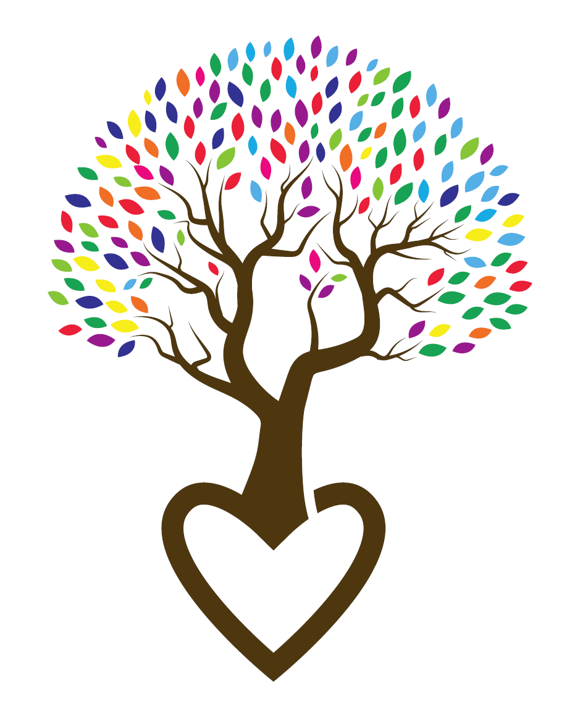

Mariane Bach
Psicopedagoga e Neuropsicopedagoga
Atendimento Psicopedagógico e Neuropsicopedagógico
Para crianças, adolescentes, jovens adultos e pessoas da terceira idade
que buscam apoio para as questões relacionadas aos processos de
aprendizagem escolar e aprendizagem na vida cotidiana!
”Intervir é um ato de amor!”
(48) 99122-8184
RUA AUROREAL, 180 - CAMPECHE, FLORIANÓPOLIS- SC, 88063-200
marianebach19@gmail.com